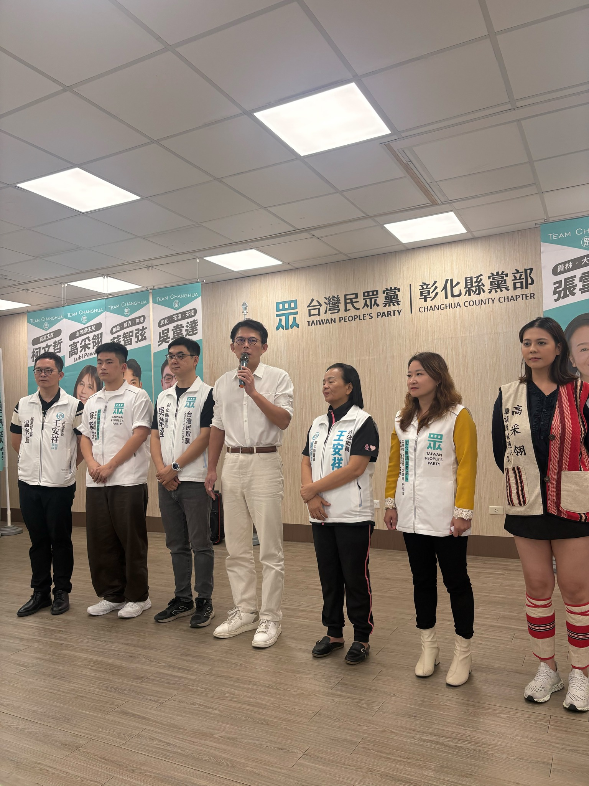

04 ／ FIELD NOTES — 服務足跡
不是參選才開始，
是每天的日常
五個現場，五段沿海人聽得見、看得到的故事。




洪雅婷，物理治療師、社區防暴宣講師、青農返鄉。芳苑出生、嫁到二林，把第一線照顧家庭與社區的經驗，從治療室帶進議會，為沿海四鄉鎮（二林・芳苑・大城・竹塘）注入新世代女力。
一個物理治療師，為什麼站出來選議員？
17 年來，我的雙手扶過上千位長輩、走進無數個家庭。在病床邊、在社區據點、在防暴講堂，我見過最真實的台灣沿海——它有人情味，也有它的傷口。
我從芳苑漁村長大，嫁到二林農村，在二林基督教醫院當過長照 1.0 的社區物理治療師，在彰化縣衛生局帶老人家做肌力訓練，也在社會處走進校園與社區做防暴宣導。我不只是治療師，我是被沿海居民「叫做女兒」的那個雅婷。
後來，我回到沿海，創立了妃雪木瓜農場，從零開始學農業、學品牌、學怎麼把這片土地的好讓更多人看見。我們得過全國農業創業菁英大賽殿軍、迎來吳寶春大師參訪、也跟興農合作推廣無毒農業。
這些經驗讓我確定一件事——沿海四鄉鎮（二林、芳苑、大城、竹塘）需要的不是更多口號，而是真的懂照顧、懂土地、懂家庭的人。
我選擇加入台灣民眾黨，因為認同它「理性、務實、科學」的精神。我相信政治不該是派系分贓的算術，而應該是把每一個基層需求接住的能力。
所以我站出來，把治療室的耐心、社區據點的紮實、農場的踏實，帶進議會。為沿海的家戶，為自己的孩子，也為下一個世代的「沿海的女兒」。
四個關鍵字，是雅婷的工作守則，也是檢驗未來四年的標準。
把鄉親的需求放在第一順位。不分顏色、不分派系，每一個聲音都該被聽見、被回應。
長者、孩子、家庭照顧者，是家的支柱也是最脆弱的環節。雅婷會用 17 年的照顧經驗，把支援送到每個家戶。
沿海四鄉鎮一條心。整合志工網絡、政府資源與民間力量，讓社區自己能照顧自己。
物理治療、長照規劃、農業創業——把現場的專業經驗，轉化為可被檢驗的政策與行動。
六條政見，每一條都來自雅婷 17 年的現場觀察。不是選舉口號，是接下來四年雅婷會逐項追蹤、逐項回報的工作清單。
推動人行道、公共空間、長照機構、廟宇與市場的無障礙化。讓輪椅族、嬰兒車、銀髮族都能安心走出家門。每年公開總體檢報告，列出改善優先順序。
整合 1.0、2.0 資源，補上沿海長照「最後一哩路」。爭取家庭照顧者喘息服務常態化、夜間支援人力、跨機構轉介單一窗口。
把家暴防治、兒少保護、性別教育列入校園與社區每年必辦課程。建立沿海四鄉鎮通報互助網絡，讓求助者第一時間找到人。
把雅婷帶過 100+ 場的肌力訓練課程，推廣到沿海所有社區關懷據點。延緩失能、降低跌倒、減少家戶照顧負擔。導入運動處方專業師資。
以雅婷自己的青農經驗為基礎，爭取沿海農業創業育成基地、無毒農業推廣、品牌行銷協助與農業科技導入。讓年輕人回得來，留得住。
爭取道路修繕、路燈補足、海堤與排水系統升級。建立沿海緊急應變網絡——當颱風來、當意外發生，社區自己能第一時間動起來。
五個現場，五段沿海人聽得見、看得到的故事。

每一張里民椅，
都是我的辦公桌。
不分顏色、不分大小，每一封陳情雅婷都會親自看過。
也歡迎告訴雅婷，沿海四鄉鎮有什麼需要被看見的事。
From the coast, for the coast. — Ya-Ting Hung